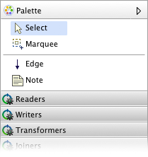

Getting started with Data Loads
An Extract, Transform, Load (ETL) graph is a series of steps used to pull data from a source system, transform it into an appropriate format, and load it into the GoodData platform. These graphs are created in CloudConnect as a sequence of visual objects. They can be set up to gather data from nearly any enterprise source database, platform, messaging service, or file system.
A CloudConnect project may contain one or more ETL graphs, which are stored in the graph/*.grf files. CloudConnect provides a suite of pre-built components to manipulate data. You may also write custom transform functions as needed.
- Attributes are qualitative characteristics of your data (e.g. Region, Zip code).
- Facts are numerical values that may be used in computation (e.g. Revenue, Cost).
- Datasets are logical groupings of attributes and facts.
- Date datasets, or date dimensions, are predefined collections of date-related attributes. Date datasets provide complex date filtering functionality without requiring additional effort.
LDMs are built using CloudConnect Designer, part of the GoodData Data Integration Service. A single logical data model may be applied to multiple GoodData projects.
Learn more about the Data Loads
Creating the ETL graph
-
1 Create the graph
Start with a graph. Go to the File → New menu
-
2 Add components

Populate the graph with components from the Palette. Properties panel enables you to quickly view properties of the selected entity. You can edit a component in the graph by double-clicking it.
-
2 Test the graph by running it locally and then deploy it to GoodData
After a project is deployed, you will find it in the Server Explorer panel right next to the Navigator.